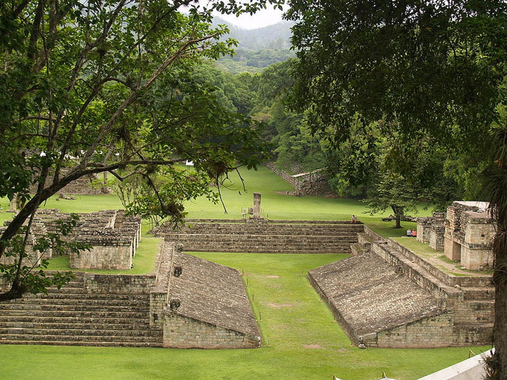
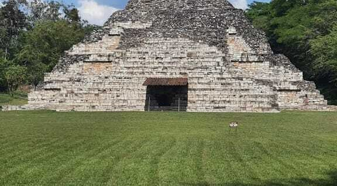
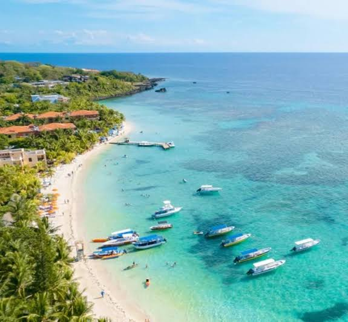
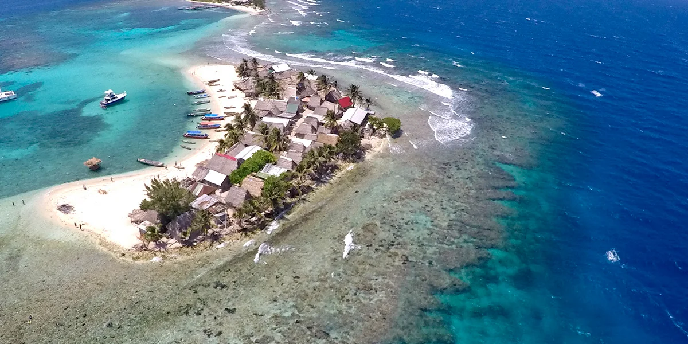
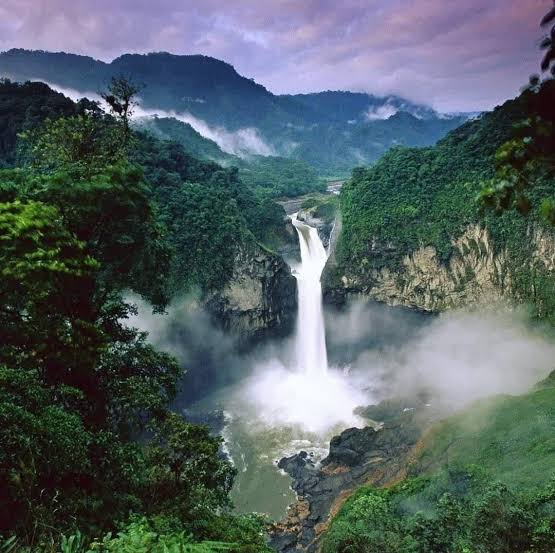
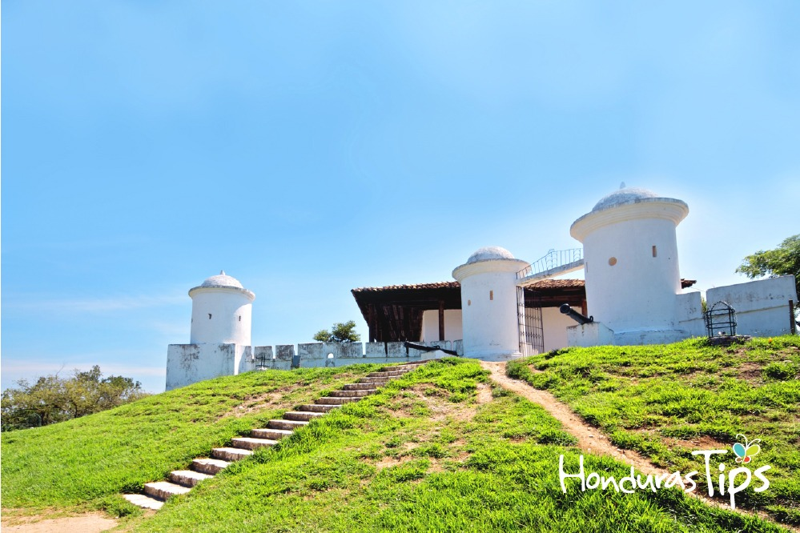
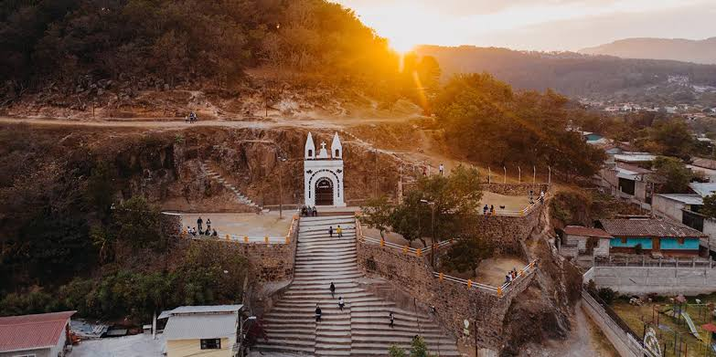

Destinos Populares
A continuacion te presentamos algunos de los destinos mas populares de honduras, en cada uno podras vivir experiencias inolvidables.
Ruta Maya e Historia
Copan Ruinas

Copán Ruinas está localizada en el occidente de Honduras Por muchos años, Copán Ruinas ha tenido fama por sus magníficas ruinas mayas, declaradas por la UNESCO Patrimonio Arqueológico de la Humanidad en 1980.
Atractivos: Riqueza arqueologica, naturaleza, cultura y gastronomia
Dificultad de acceso: es moderada
| Ciudad de salida | Medios de transportes | Tiempos de Traslado | Distancias | Altitud del Destino |
|---|---|---|---|---|
| San Pedro Sula | Avion | 40-50 minutos | 177 km | 600 m sobre el nivel del mar |
| Comayagua | Avion | 1 h - 50 min | 319 km | |
| Tegucigalpa | Avion | 1 h - 1 h 30 min | 409 km | |
| Danli | Avion | 1 h 40 min - 2 h | 509 km | |
| Juticalpa | Avion | 2 h - 2 h 40 min | 618 km |
El Puente

El Parque Arqueológico El Puente es resultado de 10 años de investigaciones realizadas en forma conjunta entre el Instituto Hondureño de Antropología e Historia IHAH y la Agencia de Cooperación Internacional del Japón (JICA), para conservar los sitios arqueológicos de esta región.
Atractivos:Estructuras arqueologicas, plazas, senderos y vestigios de antiguas comunidades mayas.
Dificultad de acceso: baja
| Ciudad de salida | Medio de transportes | Distancias | Tiempos de Traslado | Altitud del Destino |
|---|---|---|---|---|
| San Pedro Sula | Autobus | 150 km | 2 horas 30 minutos | 180 m |
| Tegucigalpa | Autobus | 340 km | 6 horas 30 minutos | |
| Comayagua | Autobus | 267 km | 4 horas 30 minutos |
Ruta del Arrecife y el Caribe
Roatan

Una ciudad famosa por su riqueza natural y gran cantidad de vida marina ademas de ser un destino turistico de clase mundial en el Caribe.
Atractivos: West Bay Beach, Tabyana Beach Half Moon Bay y West End, Arrecife Mesoamericano.
Dificultad de acceso: es de nivel baja
| Ciudad de salida | Medios de transportes | Tiempos de Traslado | Distancias | Altitud del Arrecife |
|---|---|---|---|---|
| San Pedro Sula | Avion | 15-20 minutos | 60 km | 25-40 m bajo del mar |
| Comayagua | Avion | 1 h | 214 km | |
| Tegucigalpa | Avion | 45-55 min | 304 km | |
| Danli | Avion | 1 h - 1h 10 min | 410 km | |
| Juticalpa | Avion | 1 h - 1h 15 min | 470 km |
Cayos Cochinos

Un archipielago en el Caribe Hondureño, declarado Monumento Natural Marino.
Atractivos:Playas virgenes, La Boa Rosada y los Arrecifes de Coral.
Dificultad de acceso: moderada
| Ciudad de salida | Medio de transportes | Distancias | Tiempos de Traslado | Altitud del Destino |
|---|---|---|---|---|
| San Pedro Sula | Autobus | 232 km | 3 horas | 0-30 m |
| Tegucigalpa | Autobus | 430 km | 7 horas | |
| La Ceiba | Lancha | 40 km | 1 hora |
Bosques Nublados
Parque Nacional La Tigra

Ubicado a unos 15-22km de la ciudad de Tegucigalpa y declarado el primer parque nacional de Honduras en 1980, destaca por sus atractivos naturales, historicos y ecoturisticos.
Atractivos:Es considerado un pulmon verde ya que actua como una esponja natural que acptura la humedad de las nubes y es la principal fuente de abastecimiento de agya dulce para la capital.
Contiene una gran biodiversidad que alverba mas de 200 especies de aves, ademas de orquideas, bromelias y helechos en peligro de extincion.
Dificultad de acceso: es moderada
| Ciudad de salida | Medio de transportes | Tiempos de Traslado | Distancias | Altitud del Destino |
|---|---|---|---|---|
| San Pedro Sula | Avion | 1h 30 minutos | 272 km | 1200 - 2290 metros sobre el nivel del mar |
| Comayagua | Avion | 1 hora | 107 km | |
| Tegucigalpa | Avion | 15 min | 91 km |
Parque Nacional Cusuco

Ubicado en la Sierra del Merendon (a pocos kilometros de San Pedro Sula), destaca como uno de los refugios de bosque nuboso mas importantes de centroamerica
Atractivos: Riqueza de flora y helechos gigantes, el parque es famoso por sus helechos gigantes que superan los 20 metros de altura, ofreciendo un paisaje que recuerda a un entorno prehistorico.
Biodiversidad y avistamiento de fauna, unas cascadas impresionantes y sin olvidar su gran red de senderos.
Dificultad de acceso: es moderada
| Ciudad de salida | Medio de transportes | Tiempos de Traslado | Distancias | Altitud del Destino |
|---|---|---|---|---|
| San Pedro Sula | Avion | 10 minutos | 31 km | 1500-2450 metros sobre el nivel del mar |
| Comayagua | Avion | 30 minutos | 188 km | |
| Tegucigalpa | Avion | 55 minutos | 277 km |
Ruta Lenca y Pueblos con Encanto
Gracias, Lempira

Ciudad colonial ubicada en una zona montañosa del oocidente de Honduras, rodeada de bosques y montañas.
Atractivos:Iglesias Coloniales, el Museo Casa Galeano, calles empedradas, gastronomia local y cercania al parque nacional Celaque.
Dificultad de acceso: moderada
| Ciudad de salida | Medio de transportes | Distancias | Tiempos de Traslado | Altitud del Destino |
|---|---|---|---|---|
| San Pedro Sula | Autobus | 250 km | 5 horas | 830 metros sobre el nivel del mar |
| Tegucigalpa | Autobus | 290 km | 6 horas | |
| Comayagua | Autobus | 198 km | 4 horas |
La Esperanza

Ciudad ubicada en una region montañosa de clima fresco, la cual se caracteriza por sus paisajes naturales y cultura lenca.
Atractivos:La Gruta y Mirador, el Paseo de las Sombrillas y Parque central Laguna Chiligatoro y Laguna Madre Vieja, Cascada Rio grande.
Dificultad de acceso: moderada
| Ciudad de salida | Medio de transportes | Distancias | Tiempos de Traslado | Altitud del Destino |
|---|---|---|---|---|
| San Pedro Sula | Autobus | 250 km | 5 horas | 1700 metros sobre el nivel del mar |
| Tegucigalpa | Autobus | 170 km | 4 horas | |
| Comayagua | Autobus | 103 km | 2 horas |